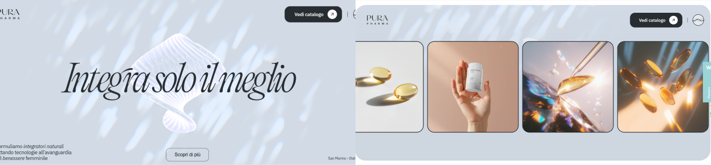

La página purapharma.it es el sitio oficial de Pura Pharma, una marca italiana dedicada al desarrollo de productos cosméticos y de bienestar a base de ingredientes naturales. Su web fue diseñada por Enrico Deiana y ha sido galardonada con un CSS Design Awards en la categoría Website of the Day, destacando por su enfoque innovador en diseño interactivo, estética elegante y una experiencia de usuario sensorial que refleja con precisión los valores de la marca.

Tras revisar el SEO de la página de Pura Pharma,
se destacan varios aspectos que podrían mejorar la visibilidad en
motores de búsqueda, aunque también hay algunas áreas en las que
se podría mejorar.
Comenzando con el título de la página:
<title>Pura Pharma | Integratori Naturali - Collezione
2025</title>
Este título es claro y contiene términos clave como "integratori
naturali" y "Collezione 2025". En cuanto a la meta descripción:
<meta name="description" content="Scopri la Collezione 2025
di Pura Pharma: integratori naturali e formule innovative per un
benessere duraturo.">
La descripción es adecuada, pero se podría hacer más completa para
incluir beneficios específicos. En relación con los encabezados,
el <h1> actual es:
<h1>Integra solo il meglio</h1>
Este encabezado tiene un buen impacto visual, pero sería útil
incluir un contexto adicional, como:
<h1>Pura Pharma | Integratori naturali per il benessere
del corpo</h1>
En cuanto al <h2>, se presenta este
texto:
<h2>La nostra visione nasce dall’ascolto che ci guida
allo sviluppo di soluzioni mirate per il tuo
corpo</h2>
Este encabezado está bien estructurado y es adecuado para la
jerarquía del contenido. No obstante, se podría mejorar añadiendo
más palabras clave relacionadas con los productos o los beneficios
de los suplementos.
En relación con las imágenes, la web sigue buenas prácticas de
SEO.
Por ejemplo, se usan etiquetas alt en las
imágenes, lo que mejora la accesibilidad y ayuda a los motores de
búsqueda a comprender mejor el contenido visual:
<img src="..." alt="Píldora naranja de omega 3 en un fondo
blanco" />
Además, la implementación de loading="lazy" y el
uso de srcset son soluciones inteligentes para
mejorar la carga de la página y asegurar una buena experiencia de
usuario en dispositivos móviles, lo cual es esencial hoy en
día.
En esta web se emplean elementos importantes para mejorar la
accesibilidad, como el uso adecuado de etiquetas semánticas. Por
ejemplo, encontré la etiqueta <footer>, que
define el pie de página, lo que ayuda a organizar el contenido de
manera estructurada. Dentro del <footer>,
se incluyen enlaces importantes como el logo de la empresa, que
tiene el atributo aria-current="page" para
indicar a los usuarios de lectores de pantalla que están en la
página actual.
Además, el sitio hace un buen uso de la etiqueta
<h1> para el título principal y las
etiquetas <h2> para los subtítulos, lo que
permite a los usuarios identificar y navegar rápidamente por los
elementos clave del contenido.
Sin embargo, al revisar los atributos de accesibilidad, encontré
que se podrían añadir más atributos ARIA como
aria-label o
aria-labelledby para proporcionar información
adicional sobre algunos elementos, especialmente los videos y los
gráficos que aún no cuentan con descripciones suficientes para
usuarios de tecnologías asistivas. Además, sería recomendable
incorporar <label> en los posibles
formularios del sitio, ya que actualmente no hay elementos
interactivos complejos, lo que limita la experiencia de los
usuarios con dispositivos de asistencia.
En cuanto a las imágenes, algunas de ellas utilizan el atributo
alt, pero algunas descripciones son muy
generales. Sería beneficioso agregar descripciones más detalladas
y específicas para aquellas imágenes que son clave para la
navegación del sitio.
También observé que el <iframe> que aparece
en la página no contiene los atributos
aria-label ni aria-labelledby,
lo cual es fundamental para que los usuarios de lectores de
pantalla comprendan el propósito del contenido dentro del
<iframe>. Sin estos atributos, el contenido
del <iframe> no es accesible de manera
efectiva para todos los usuarios.
Al revisar la web de Pura Pharma, se observa que se han
implementado correctamente diversas técnicas de diseño responsive
mediante el uso de media queries. Se utilizan puntos de ruptura
como
@media (max-width: 767px),
@media (max-width: 991px) y
@media (min-width: 1440px), lo que asegura que el
contenido se adapta de manera efectiva a diferentes tamaños de
pantalla, optimizando la experiencia tanto en dispositivos móviles
como en pantallas grandes.
Las imágenes también se gestionan de manera eficiente para
garantizar la responsividad. La web utiliza el atributo
srcset para cargar imágenes en diferentes
resoluciones según el tamaño de pantalla, y el atributo
loading="lazy" para mejorar la velocidad de
carga, cargando las imágenes solo cuando son visibles en la
pantalla. Esto es especialmente beneficioso para los dispositivos
móviles, donde la eficiencia de la carga es crucial.
Además, se ha implementado correctamente
<meta name="viewport" content="width=device-width,
initial-scale=1">, lo que asegura que la web se ajuste correctamente al tamaño de
cualquier pantalla, mejorando la usabilidad en dispositivos
móviles y tabletas.
En cuanto a la disposición de los elementos en la página, se
utilizan propiedades como display: flex y
display: grid para organizar los contenidos de
manera flexible y adaptativa. Estas técnicas permiten que los
elementos se redistribuyan de forma eficiente, garantizando que el
diseño sea funcional y atractivo tanto en pantallas grandes como
pequeñas.
La usabilidad de la web de Pura Pharma destaca por su planteamiento visual minimalista pero impactante, que facilita una navegación intuitiva desde el primer momento. Aunque no incluye un menú tradicional, la disposición de botones clave como “Descubre sobre nosotros”, visibles nada más hacer scroll, y los accesos al catálogo o al footer, permiten al usuario orientarse con rapidez. Esta simplicidad en la arquitectura de la información contribuye a una experiencia limpia, directa y eficiente.
La organización del contenido está bien pensada: no hay exceso de información, y los apartados están claramente diferenciados. La web se apoya en una tipografía de gran tamaño, legible y estéticamente cuidada, que aporta coherencia visual a todo el recorrido. Las animaciones sutiles y los pequeños efectos de interacción refuerzan la conexión del usuario con la marca sin distraer de los objetivos principales, como descubrir la filosofía de la empresa o acceder a los productos. En la parte superior derecha se encuentra una original opción de sonido, que añade un punto diferencial a la experiencia sensorial.
Aunque no se detecta un modo oscuro, la interfaz responde de forma excelente en todos los dispositivos. La adaptación responsive está muy bien lograda, y las microinteracciones actúan como refuerzo constante a las acciones del usuario, aportando dinamismo sin saturar al usuario.
En cuanto a rendimiento, el análisis con Lighthouse muestra una diferencia significativa entre dispositivos móviles y escritorio. En móvil, el First Contentful Paint (FCP) se sitúa en 3,9 segundos, y el Speed Index en 7,8 segundos, lo que indica que el contenido tarda en hacerse visible, posiblemente por el peso de imágenes. En cambio, en escritorio los datos son mucho más positivos, con un FCP de 1,0 segundos y un Speed Index de 3,7 segundos, garantizando una carga rápida y fluida. A pesar de esta diferencia, la experiencia de navegación sigue siendo positiva en ambos casos gracias a la cuidada disposición visual y técnica.
La estética de la web de Pura Pharma destaca desde el primer instante por su elegancia moderna y experimental. La combinación cromática es sobria pero efectiva: utiliza un azul verdoso suave (#9BD4D7) como acento, junto con blanco, negro y una gama amplia de grises que crean un entorno visual equilibrado, limpio y profesional. El fondo de la web tiene un efecto tipo holograma con una figura 3D que se deforma al pasar el puntero, aportando dinamismo sin resultar intrusivo.
A nivel tipográfico, combina fuentes como Editorial Old —con gran personalidad estética— con IBM Plex Sans y Arial Sans Serif, generando contrastes interesantes que refuerzan la jerarquía visual. Los títulos y cuerpos de texto están perfectamente estructurados, haciendo que la lectura sea clara, visualmente atractiva y coherente con el tono general de la marca.
Las interacciones están cuidadosamente diseñadas: al pasar el cursor por las imágenes, estas se vuelven borrosas, creando una experiencia inesperada y envolvente. Además, hay carruseles infinitos que aportan ritmo visual, botones reactivos que cambian al interactuar con el puntero, y pastillas en el footer que se iluminan al contacto. Aunque al hacer scroll no hay animaciones, otros elementos sí aportan movimiento, como el vídeo de bienvenida en un recuadro central sobre fondo negro, que da inicio a la navegación con un toque muy cinematográfico.
La inclusión de sonido ambiental suave y bien integrado es otro de los grandes aciertos de la web, ya que complementa la experiencia sin distraer. En cuanto al uso de recursos visuales, la web combina imágenes, vídeos y elementos gráficos 3D de manera eficaz, aportando personalidad e innovación sin saturar al usuario.
La web de Pura Pharma cuenta con HTTPS, lo que garantiza una navegación segura para el usuario desde el punto de vista técnico. Al acceder al sitio, aparece un aviso informando sobre el uso de cookies de terceros, aunque no se observa un panel visible que permita gestionarlas de manera detallada ni tampoco se encuentra de forma explícita una sección dedicada a la política de privacidad o condiciones legales, lo cual sería recomendable para aumentar la transparencia.